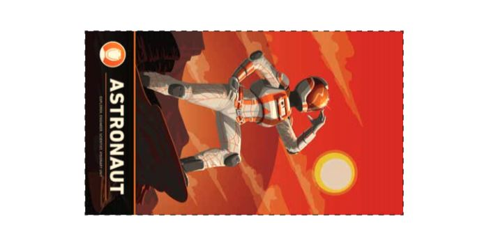
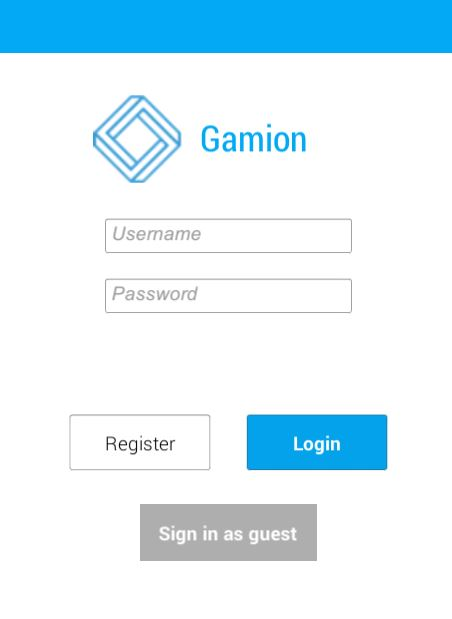
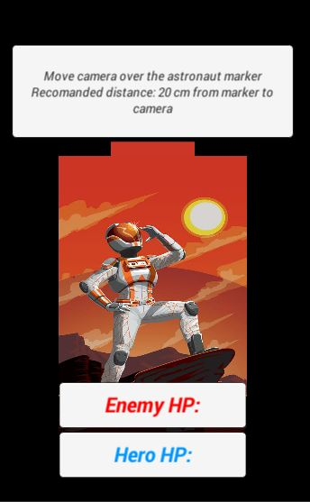
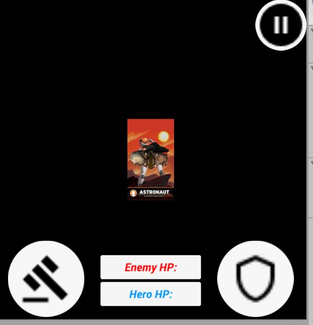

Gamicon is a modern version Street Figher resurrected using natural I/O devices and interaction methods with help of with Vuforia and Unity3d:
A smartphone or table with the following requirments:
Note: The Astranoaut marker should be also printed
You can register or play as guest. If you want to save your progress and heroes stats you will need to have an account.
You can choose from multiple heroes, based on their abilities.
Before the game start you will need to place camera on top of the marker.
Your primary game input device is a touch screen. You can control the main character, by clicking pressing the Attack or Defense buttons
How to choose another level?
In progress feature
Where can I leave feedback about app?
Leave comments on Gamicon blog
How to choose another character?
Tap on image on character selection screen
How the stats affects the game?
The agility makes hero to attack faster; Power to have a greater damage and Health to be more time alive having more Health Points;